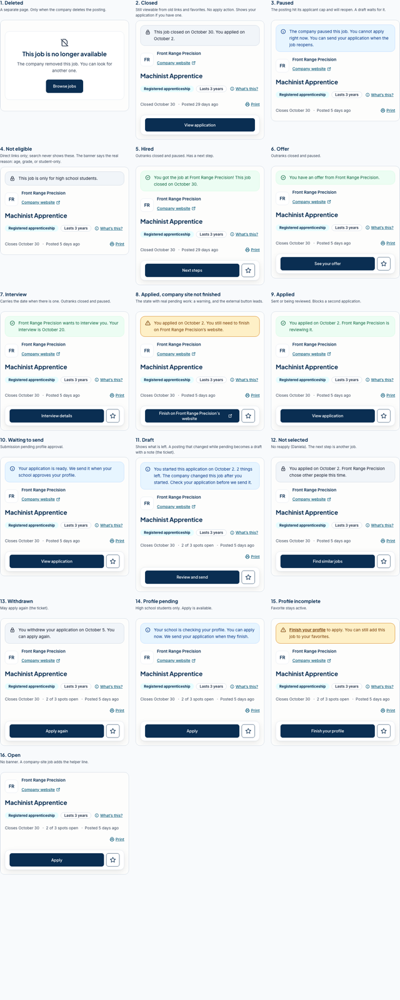
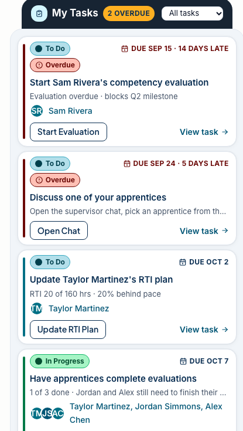
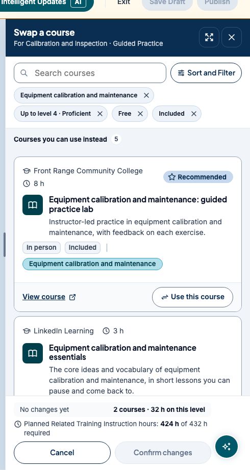
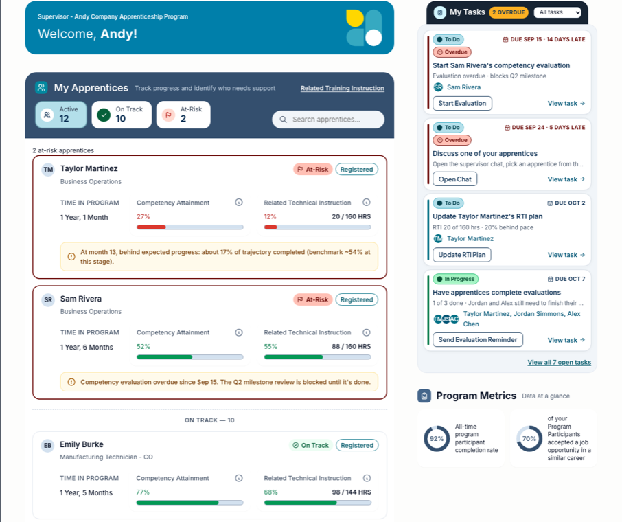
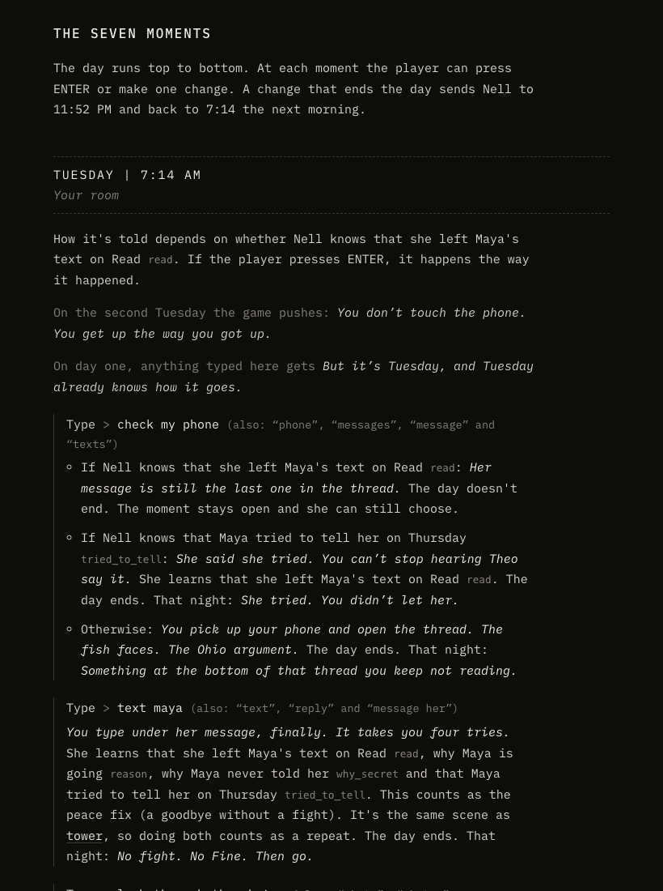
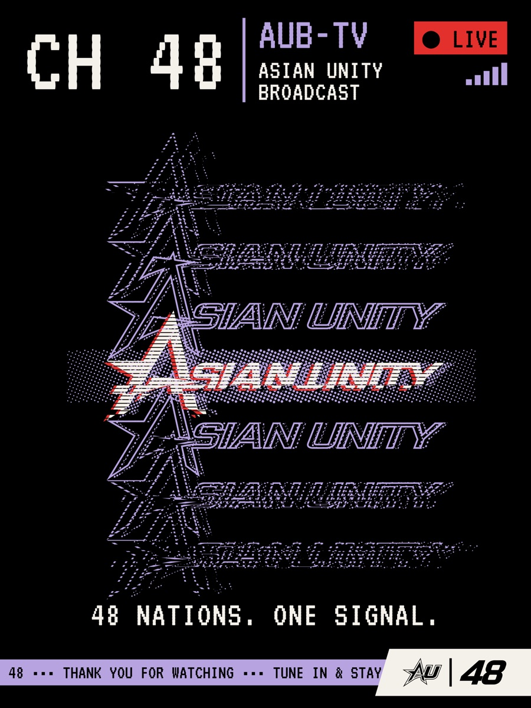
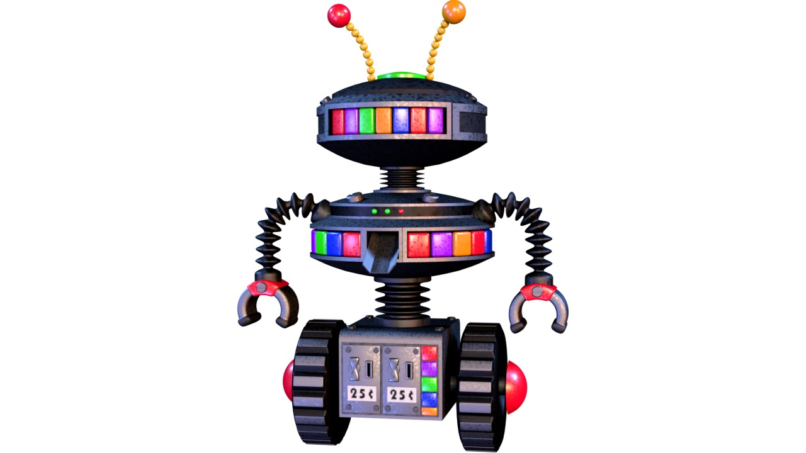

Hi, I'm Andy. I design products, then I build them.
I want to end up making games and interactive things. Right now I'm looking for a Summer 2027 internship in creative technology, design engineering or product design. One thing I've really enjoyed about my current role is getting to work on both the design and the development side: I like taking an idea from Figma and actually building it, because that's where I find out whether the design decisions hold up.
Work
An apprenticeship-management product at CareerWise USA, 2025 to now
Supervisors, apprentices, schools and employers all use the same product, so most of what I do is deciding what a screen should say in each state, and what comes first. Every screenshot is a prototype with fictional demo data, cropped to the component with the branding removed.

01 A single posting page with 16 states, resolved by priority The longest test posting went from about seven phone screens to about four. Read the case study
02 One task component, three surfaces Approved, and now the reference for app chrome on later pages. Read the case study
03 A swap-not-delete flow where the hours update live Locked courses stay visible with their reason; nothing changes until Confirm. Read the case study
04 Keeping the design system and the code the same thing Tokens in Storybook and CSS; prototypes rebuilt on the real component CSS. Read the case studyProjects
The things I make when nobody asked me to

Tomorrow A short text game about one day, regret and letting go A hand-built engine, a generated decision map, and tests that play the game.
Asian Unity A campus identity that behaves like a broadcast 140K Instagram views in one 30-day period.
3D short A 45-second short from storyboard to sound Blender, pixel art from Figma, sound design in Premiere. AndyGetAJobChallenge A job-search tool I built for myself A scheduled Claude Code routine scores postings and tailors a resume from JSON.All projects, including the DJ work, the oscilloscope render and the chatbot
Contact
If any of this looks like the kind of work you need, I'd like to hear from you.
o.andy.tran@gmail.com · Boulder, CO